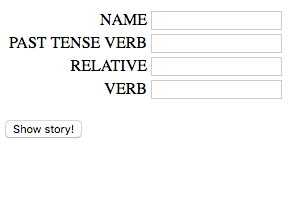

Bio: I am a girl who codes from Sumware, CA. I will be in the 12th grade in the fall, and I am looking forward to applying to colleges. I live at home with my mom, my brother, and my cat named Seymore. When I'm not coding, you can find me listening to music with my friends or reading.
Likes: I love a great science fiction novel. Right now I am reading The Three Body Problem, by Cixin Liu.
Dislikes: I really don't like fish. They have dead eyes that freak me out!
Fun Fact: So far, I've been to 4 different continents! I can't wait to see the others.
Favorite Websites:
Recent Projects:
Mad Libs
I built a cool Mad Libs game. When a user fills in the different parts of speech, the program will use those words to tell a silly story. To build it, I learned about JavaScript variables and "document.getElementByID".
Personality Quiz
I also built a personality quiz. Answer some questions and find out which Harry Potter character you are! To build it, I learned about JavaScript conditionals and logical operators.
Ubbi Dubbi Translator
My favorite project to build was an Ubbi Dubbi translator. It takes a word or sentence that you input, and it translates it into Ubbi Dubbi. To build it, I learned about JavaScript loops.
Look at these cool pictures of my projects! (Click to change picture.)
